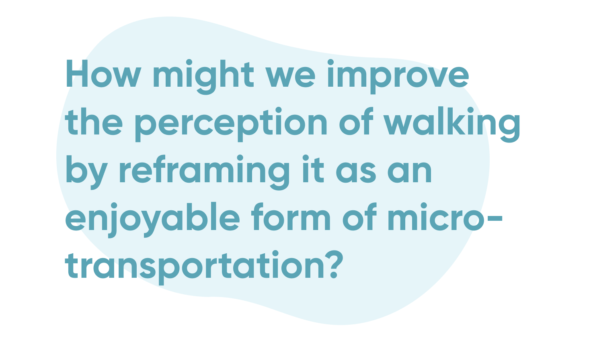
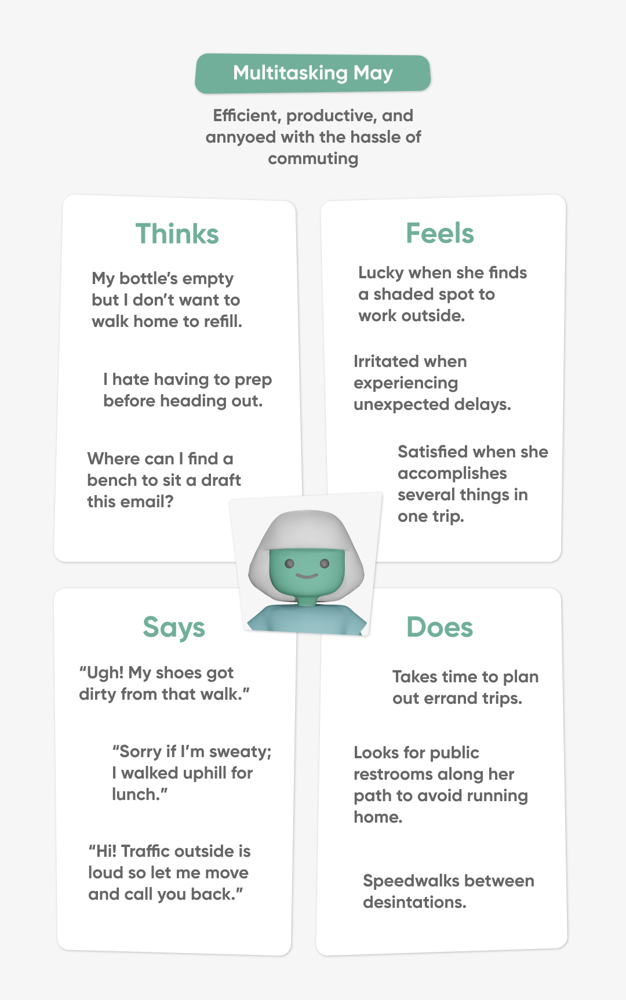
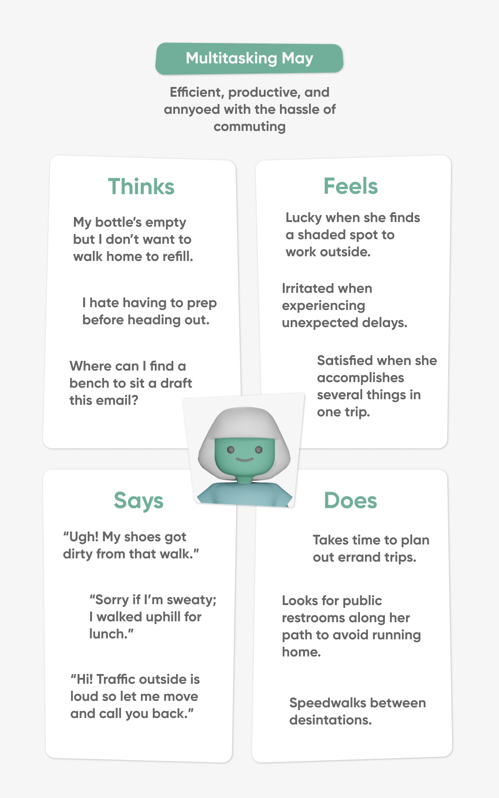

JAMES
HUA.
LEAFLET.
User experience case study that dives into perspectives & behaviors surrounding forms of micro-transportation
and alternatives (such as walking), and proposes a new, adventureous, method of wayfinding to change
mindsets.
MY ROLE
My partner and I took equal roles defining the project scope and managing our timeline. We both
contributed towards rounds of user interviews and secondary research. From there, we empathized with these
user-expressed concerns via personas, and brainstormed solutions to our problem statement. Finally, we
prototyped our solution by designing a functioning user interface with clean and friendly visual elements. I
took the lead on building out and prototyping interfaces while my partner designed all 3D assets.
PARTNER
Heidi Erwin
SKILLS
UX Research
UI Design
Visual Design
Prototyping
PROGRAMS
Figma
Adobe Illustrator
Blender
TIMEFRAME
4 Months
PROBLEM
SPACE.
Micro-transportation (ways of commuting across short distances, around 5 miles or less)
has been described as inaccessible, expensive, and time-consuming for users.
Services like Uber and Lyft are expensive even across short distances, and their reliability varies
significantly with time and location. Similarly, scooter-share and bike-share programs are unaffordable and
unreliable, on top of being subject to theft and vandalism Forbes
(2019, February).
Overall, existing micro-transportation has been described as not worth it: the time, money, hassle, or stress.
Keep reading to learn more about our process and solution.
INTERACTIVE
PROTOTYPE.
Welcome to Leaflet! Let's turn your every day commute into a comfortable adventure. Open our application and let's get explore the city together today. You never know what you'll find.

USER
RESEARCH.
Our users include people who use micro-transportation in metropolitan/urban/suburban areas.
With this audience in mind, we interviewed 10 individuals who reside in urban & suburban areas to better
understand their transportation habits and preferences. Then we synthesized our findings into 7 considerations
that users made when evaluating their commute. These concerns fell into the 2 categories of Availability
(people CAN use it) vs. Enjoyability (people WANT to use it).
To obtain quantitative data on availability and enjoyability, we surveyed 43 individuals on
how they viewed 6 different forms of transportation. We then plotted this data and found that no form was
both more enjoyable and more available than the others.
To solve our issue, we wanted to focus on the form that has the greatest potential to be improved. We
don’t have direct control over availability; instead, can we increase the enjoyability of the form of
transportation already most accessible?
After analyzing results from our survey, it seemed walking was the most available. However, people generally don’t enjoy it; why? To get more insights, we interviewed 6 individuals to better understand their perception of walking.

The interviews confirmed that the primary concerns with walking were centered around enjoyability. With this in mind, we decided to narrow the scope of the problem we’re trying to solve:
EMPATHY
MAP.
To address this multi-layered issue, we wanted to account for different lifestyles and the varied reasons people do not enjoy walking. While exploring these nuances, we created three personas based on our interviewed users, illustrating their wants and needs through empathy maps.
 

AFFINITY
MAP.
We were ready to begin ideating with the specific needs of our personas in mind. To address the major dislikes reported in our interviews, we wrote down potential solutions to these 5 major pain points in a 10-minute brainstorm.

To reemphasize: based on our research, walking is already cost-efficient, reliable, and customizable, but
it is not as enjoyable as it could be.
From our affinity map, we focused on the most important features to make an app that increases fun through
social community exploration and improves comfort through easy resource access and customizable paths.
WIREFRAME.
We created a wireframe of the important functionalities (social, community, resource access, custom paths) to map out the flow of our app:
APP FEATURES.
NEXT
STEPS.
With this prototype in hand, we were near completion; however, to understand areas for future improvement,
we conducted some usability tests via UserTesting.com. The participants interacted with the core
functions: Find, Community, Wander, and Friends, and recorded their thoughts and feelings throughout the
process.
Users felt that the overall application had good purpose and stated that they, or someone they know, would
enjoy using it. They also enjoyed the friendly and clean visual design, but they felt that certain icons (e.g.
community) were vague and unclear. Additionally, users felt that the design was too simplistic and they
desired more information to be displayed, such as incline.
If given more time to develop the prototype, we’d address these users’ concerns, balancing the amount of
information shown with ease of use. In terms of other features to add to the application, we would also
like to integrate safety features. Because of the serious nature of keeping walkers safe, though,
tackling this challenge was not something we had time for in our initial run of this project.